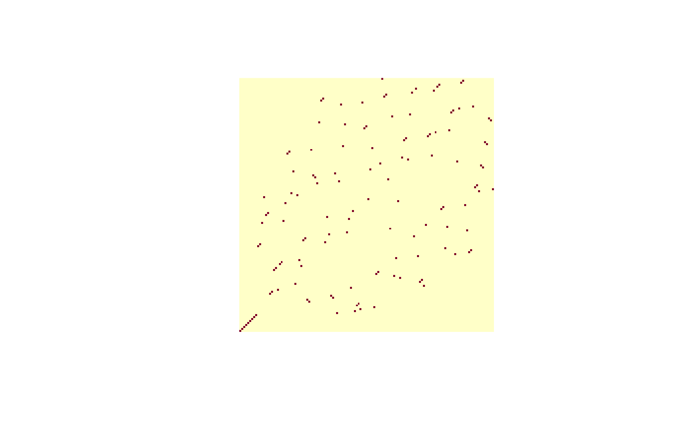

Permutation matrices
perm_matrix.RdGiven a permutation, coerce to word form and return the corresponding permutation matrix
Usage
perm_matrix(p,s=size(p))
is.perm_matrix(M)
pm_to_perm(M)Details
Given a permutation p of size \(s\), function
perm_matrix() returns a square matrix with \(s\) rows and
\(s\) columns. Entries are either 0 or 1; each row and each column
has exactly one entry of 1 and the rest zero.
Row and column names of the permutation matrix are integers; this makes the printed version more compact.
Function pm_to_perm() takes a permutation matrix and returns
the equivalent permutation in word form.
Note
Given a word p with size s, the idiom for
perm_matrix() boils down to
M <- diag(s)
M[p,]
This is used explicitly in the representations vignette. There
is another way:
which might be useful sometime.
See also the representation and order_of_ops vignettes, which
discuss permutation matrices.
Examples
perm_matrix(rperm(1,9))
#> 1 2 3 4 5 6 7 8 9
#> 1 0 0 0 0 0 0 0 1 0
#> 2 0 1 0 0 0 0 0 0 0
#> 3 0 0 0 0 1 0 0 0 0
#> 4 0 0 0 0 0 1 0 0 0
#> 5 0 0 0 0 0 0 1 0 0
#> 6 0 0 1 0 0 0 0 0 0
#> 7 0 0 0 0 0 0 0 0 1
#> 8 0 0 0 1 0 0 0 0 0
#> 9 1 0 0 0 0 0 0 0 0
p1 <- rperm(1,40)
M1 <- perm_matrix(p1)
p2 <- rperm(1,40)
M2 <- perm_matrix(p2)
stopifnot(is.perm_matrix(M1))
stopifnot(all(solve(M1) == perm_matrix(inverse(p1))))
stopifnot(all(M1 %*% M2 == perm_matrix(p1*p2)))
stopifnot(p1 == pm_to_perm(perm_matrix(p1)))
data("megaminx")
image(perm_matrix(permprod(megaminx)),asp=1,axes=FALSE)
